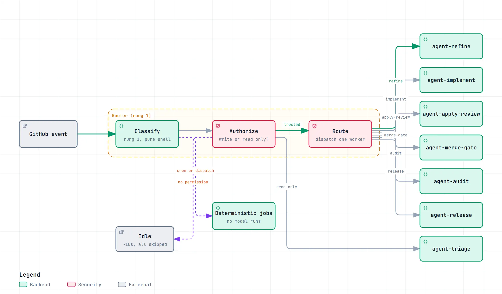
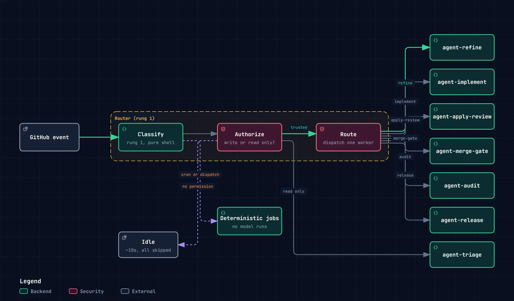

Open#318
Retry the artifact upload when the release step times out
no labels
Agentic Workflows are reusable GitHub Actions loops from Plain Concepts Platform. One router turns every GitHub event into one route, and seven agent workers carry an issue from opened to merged.
The front door for read-only openers. Triage diagram
Retry the artifact upload when the release step times out
First it lands in triage.
Read-only openers come through the front door; writers skip it.
Retry the artifact upload when the release step times out
Then refine sizes it.
Three to five points goes ahead; eight or more is split.
Retry artifact upload on release timeout
Implement opens one PR.
It writes the code and stops; the merge is not its call.
Retry artifact upload on release timeout
The gate merges it.
One merge at a time for the whole repository.
The front door for issues opened by people with read-only access. Four outcomes, and only one of them closes anything.
Open the interactive diagram ↗

Run the installer in your repository, after agent-harness, and pick the loops you want.